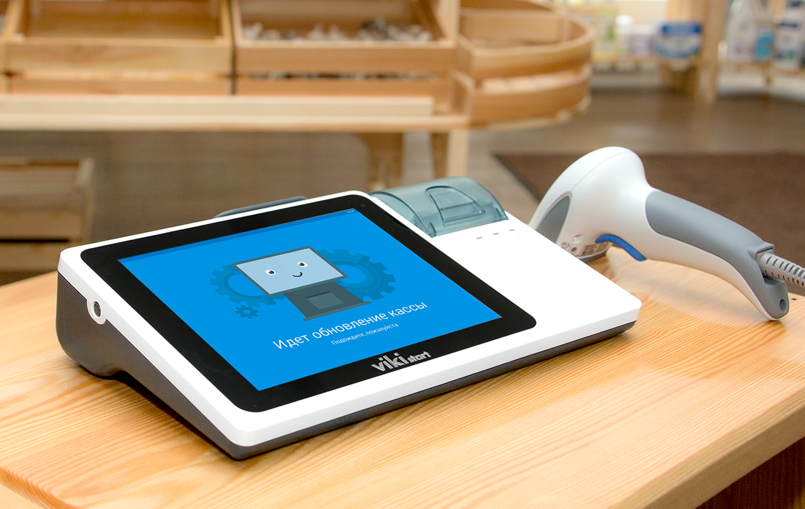
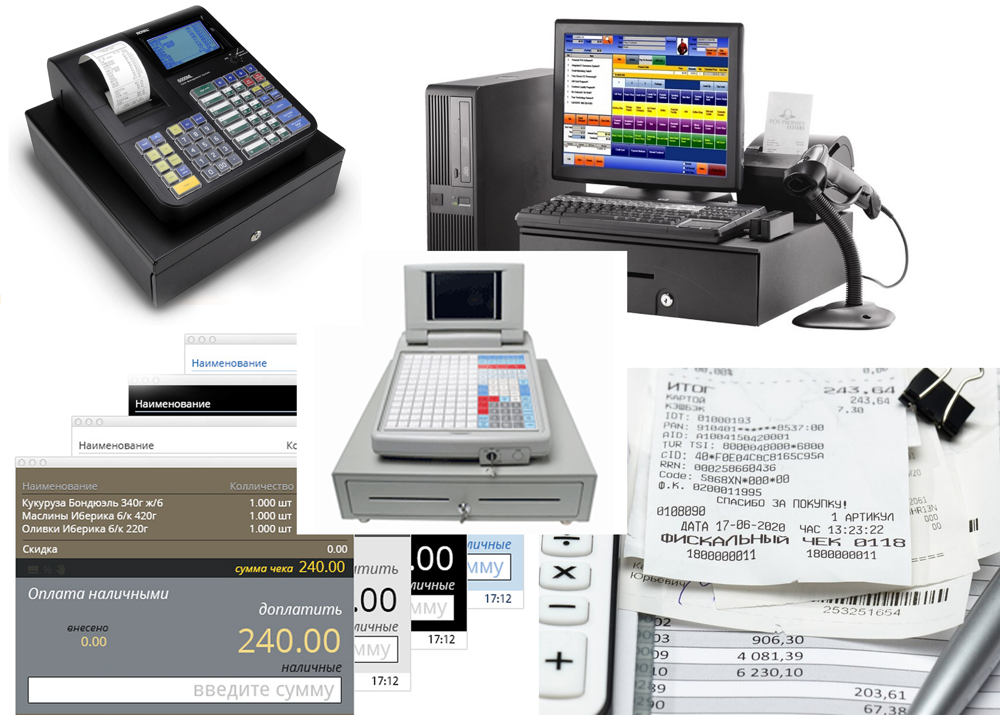
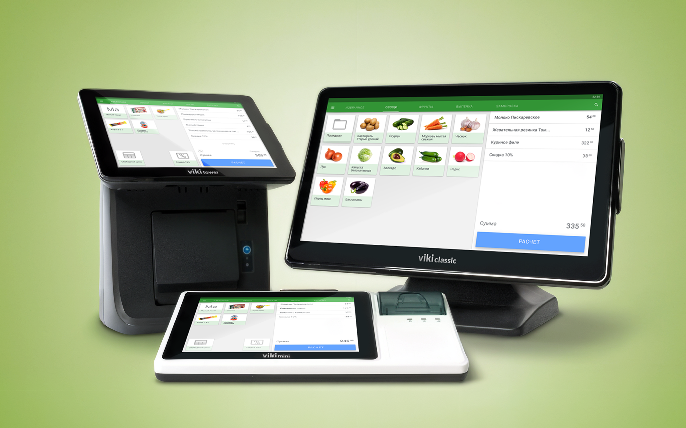
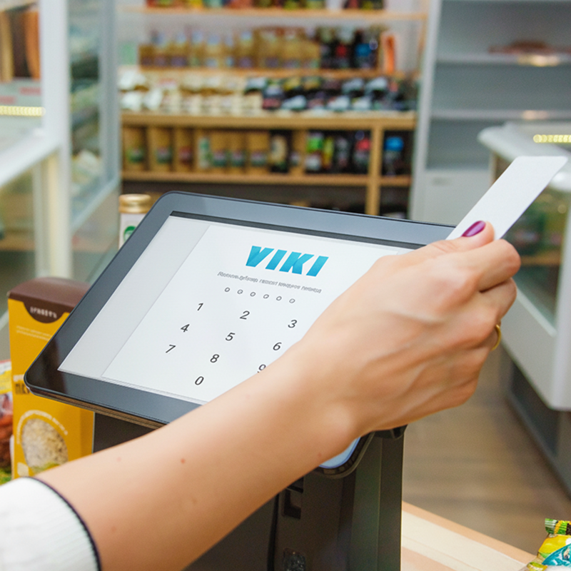
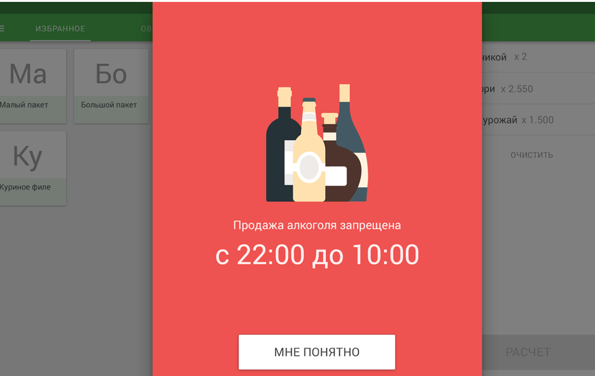

Turning retail tech into something people trust

Led the creation of Russia’s first touchscreen POS systems, reshaping how thousands of businesses sell, learn, and operate every day.
No manuals. No hand-holding. Just tools people could figure out in five minutes, even if they’d never used a POS before.

Overview
CSI, one of Russia’s leading retail tech companies, launched Dreamkas to pioneer the country’s first modern touchscreen POS systems. The goal was to create intuitive tools requiring no training, a new standard for thousands of businesses.
Overview
I led the UX, shaping interaction logic, language, and workflows from the ground up. Through field research and close team collaboration, we built a system that brought clarity, speed, and trust to diverse retail environments.


I helped bring touchscreen POS technology into everyday retail, reaching thousands of businesses across the country.
The Challenge
A sudden regulatory shift forced every business, from bakeries to open-air markets, to adopt certified digital registers within months.
Thousands of cashiers and store owners with limited digital skills had to master unfamiliar systems while handling real-time sales under constant pressure.
The market was dominated by outdated, unintuitive systems that made everyday retail harder, not easier.

My Part in This
As the only UX designer at the start of the project, I wore many hats — from leading user research and prototyping to establishing workflows, onboarding teams, and driving early product decisions.
I shaped the first interaction patterns, built design foundations from scratch, and collaborated closely with engineers and business stakeholders to bring the vision to life.
Over time, my role expanded beyond individual contributions. I helped define the company’s approach to UX, introducing new tools and processes, mentoring new team members, and influencing how design fit into business strategy.
My work shaped not only the product, but also the growing culture of design inside Dreamkas.

Research & Discovery
Research & Discovery
To design a POS system for users who had never used one, I had to start from the source — real cashiers, business owners, and the messy realities of retail work.
This phase was all about understanding behaviors, uncovering pain points, and translating those into clear design priorities.
Shadowed cashiers and spoke with owners on busy shifts to see where the old tools broke down.
Mapped checkout, refunds, and edge cases to find where confusion piled up under pressure.
Turned weekly findings into prototypes we could test again on the floor.

That’s me in the field, learning directly from cashiers during their shifts.
“Olga has a rare ability to understand people on a deeper level. It changed the way we made decisions as a team.”
Understanding the Users
At that time most Russian shops relied on outdated button-based registers with tiny screens, while smaller businesses used pen and paper, leading to errors and compliance issues. New fiscal laws forced a rapid switch to digital systems — users suddenly had to work with tools they’d never encountered.
This exposed how poorly existing solutions fit real retail life. Cashiers had to navigate complex, unfamiliar systems under pressure. Store owners managed training and technical issues they didn’t understand themselves. Support teams struggled with endless troubleshooting.

Cashiers were the ones standing between outdated machines and impatient queues. Most had never touched a touchscreen before, and many were non-tech-savvy or temporary workers with no formal training.
Checkout had to stay fast when lines peaked; every confusing label or extra tap slowed everyone down.

For small and mid-sized business owners, running operations meant juggling legal compliance, manual reporting, and training staff on systems they barely understood themselves.
Owners needed confidence that staff could run compliant sales without constant supervision.

Support teams and installers worked with outdated hardware and inconsistent setups across thousands of locations.
Remote diagnostics and repeatable install steps reduced repeat visits and phone support load.
Understanding all perspectives was essential to build something that worked not in theory, but in the messy reality of real retail.

From Research to Real Product
From Research to Real Product
This wasn’t just a handful of interviews and a couple of wireframes. It was months of deep, iterative work — hundreds of prototypes, multiple rounds of testing, and constant discussions with developers, stakeholders, and the sales team.
Translating that research into a real product meant rethinking everything from interaction logic to visual language. I created the core UX foundations, while real user insights shaped how the product behaved — not assumptions.
Unified typography, spacing, and components across cashier and back-office tools.
Reduced destructive actions and clarified totals before payment.

Part of the Viki POS lineup, multiple models with different screen sizes and configurations, built to fit any retail environment.
The result was a system designed to scale to thousands of stores and perform in real retail chaos.
The Core User Experience
The Core User Experience
Designing the cashier interface was the most hands-on part of the project. This was the screen people lived in all day — every tap and layout choice shaped how fast and confidently they could work.
I spent a lot of time refining the small things that make a difference under pressure: spacing, button sizes, the way errors appeared, the rhythm of checkout flows.
Kept primary actions within easy reach during long shifts.
Let staff correct mistakes without losing the sale.

My goal wasn’t to make something flashy or “modern”, but to give people a tool they could trust, no matter their experience level.
Under the Hood
Under the Hood
While cashiers interacted with clear, focused screens, the system quietly handled a dense network of operations, legal rules, and integrations.
This invisible layer was critical — it’s what made the product reliable at scale, not just pleasant to use.
Aligned screens with regulatory outputs so stores stayed audit-ready.

Reliability had to live behind the scenes, where shoppers never looked.
Results for Cashiers:
Calm at the Register
Results for Cashiers:
Calm at the Register
Before Dreamkas, cashiers wrestled with tiny screens, cryptic codes, and flows that broke when lines grew. Every mistake echoed down the queue — stress for staff and friction for shoppers.
The new POS put large touch targets, plain language, and forgiving flows first. Checkout stayed fast when stores were busiest, and people recovered from errors without losing the sale.
Streamlined steps cut time at the till during peak hours.
Clear hierarchy and spacing reduced errors under pressure.
New hires could follow on-screen guidance without manuals.


“I don’t fight the machine anymore — I just sell.”
Designing for the Real World
Designing for the Real World
Retail isn’t a lab. Screens had to work in glare, noise, long shifts, and interrupted attention — the same conditions we saw in field visits.
This section is a short walkthrough of how we stress-tested ideas before they ever reached a live store. Video placeholder — full reel to be added.
Results for Business:
Control You Can See
Results for Business:
Control You Can See
Owners needed visibility into sales, compliance, and staff performance without wading through exports or calling support.
Dashboards and reports translated activity into decisions — what to stock, when to staff up, and where revenue leaked.
Sales and fiscal data aligned for audits and daily ops.
Clear signals replaced guesswork when something looked off.


“Finally I see what happens in my stores without living behind a spreadsheet.”

Learnings & Growth
Learnings & Growth
Dreamkas taught me to treat retail software as a choreography of stress — every second at the till is borrowed from someone behind you in line.
The biggest growth was learning to defend simplicity when stakeholders asked for more — because “more” usually meant slower.
Nothing replaced watching cashiers during real rushes.
Repeatable patterns made handoff and QA predictable.

Store visits kept the roadmap honest when metrics alone couldn’t.
Growth meant choosing clarity over feature noise, every time.
Before I Close This Case
Before I Close This Case
Self-checkout and new store formats were already on the horizon. We prototyped how Dreamkas could extend beyond the traditional counter — same trust, new surfaces.
This closing chapter is a glimpse of that stretch goal. Video placeholder — story to ship later.

From Fear to Familiar
From Fear to Familiar
Touchscreens were unfamiliar to many cashiers. Fear of breaking something was as real as slow service.
Onboarding and in-product guidance turned that fear into muscle memory. Video placeholder — interview reel to come.
Still in Use, and Still Making Life Easier
Years later, many installs are still running the same flows we shipped — a rare kind of longevity in retail tech.
Still in Use, and Still Making Life Easier
From compact markets to self-checkout pilots, the same principles — clarity, resilience, respect for the person at the till — keep showing up.


If a product still helps people years after launch, we did something right in the bones of the design.